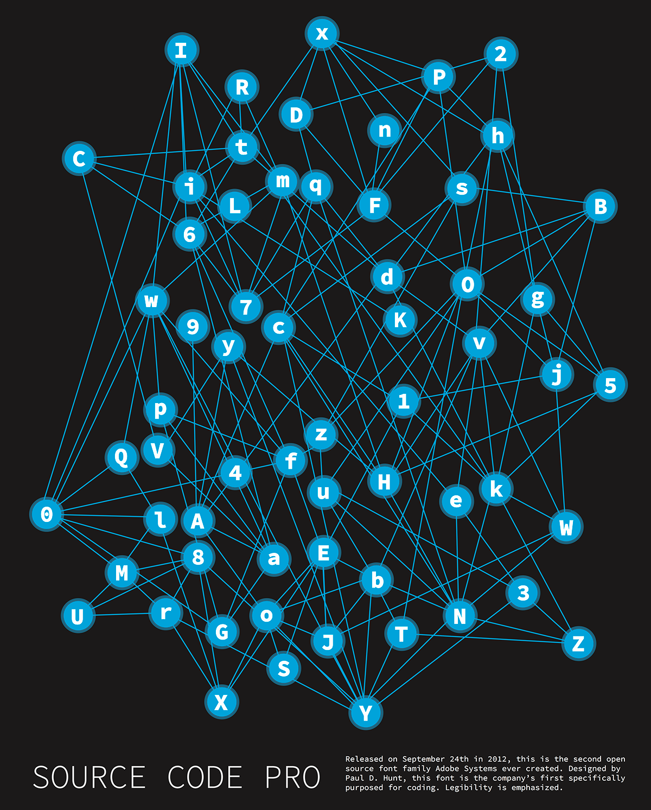

Typography Poster
Software Used: Adobe Illustrator
This poster was also created in response to a class assignment in DES 16, a lower division digital studio course. Guidelines called for in depth research and analysis of a typeface to distill its visual character into a cohesive poster. An investigative essay accompanied this project. Source Code Pro was my chosen font style. Being the second ever open source character set released by the notoriously capitalist Adobe Systems corporation, its inception story seemed more compelling than that of most comparables. Within the poster, only type and color was to be used. No other visual elements are present. In accordance with constraints of the assignment, all displayed letters are visible as a result of high contrast between the black background, white text, and overlapping circular areas of semi-transparent blue. The open source nature of the license under which Source Code Pro is released embodies the direct inspiration for my interconnected poster concept. Network diagrams were used as a geometric point of reference.